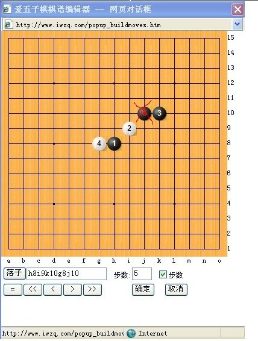

求教
首页
妖刀天下
#1 求教 作者：^版徒 发表时间：2011-8-20 0:45:17

该4手,除了此5手,(用另外的5)黑棋后三步走法
#2 Re:求教 作者：失落刀 发表时间：2011-8-20 0:51:05
=======上图对应的爱五子棋谱代码如下，以便你拆解：========
h8i9k10g8j11a1k8
======================================================
#3 Re:求教 作者：^版徒 发表时间：2011-8-20 0:58:46
=======上图对应的爱五子棋谱代码如下，以便你拆解：========
h8i9k10g8i12
======================================================这个什么情况
#4 Re:求教 作者：失落刀 发表时间：2011-8-20 1:09:23
这个5超出了我的知识范围
#5 Re:求教 作者：^版徒 发表时间：2011-8-20 1:12:33
啊^^^^^^^^
#6 Re:求教 作者：自来水 发表时间：2011-8-20 14:07:14
=======上图对应的爱五子棋谱代码如下，以便你拆解：========
h8i9k10g8j9
======================================================
看看这个5如何
［此帖子已被 自来水 在 2011-8-20 14:16:26 编辑过］
#7 Re:求教 作者：日月丽天 发表时间：2011-8-20 14:39:40
=======上图对应的爱五子棋谱代码如下，以便你拆解：========
h8i9k10g8k8
======================================================这个5通恒星刀，属于2打，可以必胜了
#8 Re:求教 作者：自来水 发表时间：2011-8-20 15:14:00
刚才那个5也必胜，第一个黑败谱比较大，有什么问题再交流
 妖刀3.rar
妖刀3.rar［此帖子已被 自来水 在 2011-8-20 15:16:09 编辑过］
［ 失落刀 于 2011-8-20 19:02:04 时奖励此帖[金币加 100 威望加1］